Module 3: Univariate Analysis
Stefano Cacciatore
September 05, 2024
Last updated: 2024-09-05
Checks: 7 0
Knit directory: Tutorials/
This reproducible R Markdown analysis was created with workflowr (version 1.7.1). The Checks tab describes the reproducibility checks that were applied when the results were created. The Past versions tab lists the development history.
Great! Since the R Markdown file has been committed to the Git repository, you know the exact version of the code that produced these results.
Great job! The global environment was empty. Objects defined in the global environment can affect the analysis in your R Markdown file in unknown ways. For reproduciblity it’s best to always run the code in an empty environment.
The command set.seed(20240905) was run prior to running
the code in the R Markdown file. Setting a seed ensures that any results
that rely on randomness, e.g. subsampling or permutations, are
reproducible.
Great job! Recording the operating system, R version, and package versions is critical for reproducibility.
Nice! There were no cached chunks for this analysis, so you can be confident that you successfully produced the results during this run.
Great job! Using relative paths to the files within your workflowr project makes it easier to run your code on other machines.
Great! You are using Git for version control. Tracking code development and connecting the code version to the results is critical for reproducibility.
The results in this page were generated with repository version dbbf64a. See the Past versions tab to see a history of the changes made to the R Markdown and HTML files.
Note that you need to be careful to ensure that all relevant files for
the analysis have been committed to Git prior to generating the results
(you can use wflow_publish or
wflow_git_commit). workflowr only checks the R Markdown
file, but you know if there are other scripts or data files that it
depends on. Below is the status of the Git repository when the results
were generated:
Ignored files:
Ignored: .DS_Store
Note that any generated files, e.g. HTML, png, CSS, etc., are not included in this status report because it is ok for generated content to have uncommitted changes.
These are the previous versions of the repository in which changes were
made to the R Markdown
(analysis/Module_3_Univariate_Analysis.Rmd) and HTML
(docs/Module_3_Univariate_Analysis.html) files. If you’ve
configured a remote Git repository (see ?wflow_git_remote),
click on the hyperlinks in the table below to view the files as they
were in that past version.
| File | Version | Author | Date | Message |
|---|---|---|---|---|
| Rmd | 8486be7 | tkcaccia | 2024-09-05 | update |
Univariate Analysis
What is univariate analysis ?
The idea of univariate analysis is to first understand the variables individually. It is typically the first step in understanding a data set. A variable in UA is a condition or subset that your data falls into. You can think of it as a “category” such as “age”, “weight” or “length”. However, UA does not look at > than 1 variable at a time (this would be a bivariate analysis)
Learning Objectives:
Summarising Data
Frequency Tables
Univariate Hypothesis Testing
Visualising Univariate Data
Correlation
Simple Regression analysis
# Installation of packages (usually needed)
# install.packages("ggplot2")
# install.packages("dplyr")
# install.packages("ggpubr")
# install.packages("corrplot")
# Loading of packages
library(ggplot2)
library(dplyr)
Attaching package: 'dplyr'The following objects are masked from 'package:stats':
filter, lagThe following objects are masked from 'package:base':
intersect, setdiff, setequal, unionlibrary(ggpubr)
library(corrplot)corrplot 0.92 loadedlibrary(stats)1. Summarising Data
# Using the data set stored in Rstudio called "cars"
# We need to create an array of our single variable for UA:
x <- cars$speedLooking at the CENTRAL TENDENCY of the data:
mean(x)[1] 15.4median(x)[1] 15mode(x)[1] "numeric"Looking at the DISPERSION of the data:
min(x)[1] 4max(x)[1] 25# Range of the data:
range(x)[1] 4 25# Inter-quantile range:
IQR(x)[1] 7# Variance -->
var(x)[1] 27.95918# Standard Deviation:
sd(x)[1] 5.287644TIP: you can use the function
summary to produce result summaries of the results of
various model fitting functions.
summary(x) Min. 1st Qu. Median Mean 3rd Qu. Max.
4.0 12.0 15.0 15.4 19.0 25.0 2. Frequency Tables:
The frequency of an observation tells you the number of times the observation occurs in the data.
A frequency table is a collection of these observations and their frequencies.
A frequency table can be shown either graphically (bar chart/histogram) or as a frequency distribution table.
These tables can show qualitative (categorical) or quantitative (numeric) variables.
Example Data
We will use a data frame with a categorical variable and a numerical variable to demonstrate each type of table.
# Create example data
set.seed(123) # For reproducibility
data <- data.frame(
category = sample(c("A", "B", "C", "D"), 100, replace = TRUE),
value = rnorm(100, mean = 50, sd = 10)
)
head(data) category value
1 C 52.53319
2 C 49.71453
3 C 49.57130
4 B 63.68602
5 C 47.74229
6 B 65.16471# Frequency table for the categorical variable
freq_table <- table(data$category)
freq_table
A B C D
28 26 29 17 # Qualitative Variables:
freq_table_numeric <- table(data$value)
freq_table_numeric
26.9083112435919 29.4675277845948 33.3205806341186 33.8211729171084
1 1 1 1
33.9846382642541 34.2785584085451 34.5124719576978 34.8533234621825
1 1 1 1
35.382444150041 35.3935992907518 35.561068390282 37.1296952396482
1 1 1 1
37.7928228774546 39.2820877352442 39.7357909969322 39.7587120939509
1 1 1 1
39.8142461689291 40.3814336586987 40.4838143273498 40.525253858152
1 1 1 1
41.5029565396642 42.1509553054292 42.895934363007 42.9079923741761
1 1 1 1
43.1199138353264 43.4805009830454 43.5929399169462 43.7209392396063
1 1 1 1
43.9974041285287 44.2465303739161 44.690934778297 44.976765468907
1 1 1 1
45.0896883394346 45.0944255629933 45.7750316766038 46.1977347971224
1 1 1 1
46.2933996820759 46.5245740060227 46.6679261633058 46.7406841446877
1 1 1 1
47.1522699294899 47.3780251059753 47.4390780780175 47.5330812153763
1 1 1 1
47.6429964089952 47.7422901434073 47.7951343818125 48.6110863756096
1 1 1 1
49.286919138764 49.4443803447546 49.5497227519108 49.5712954270868
1 1 1 1
49.714532446513 50.0576418589989 50.4123292199294 50.530042267305
1 1 1 1
50.7796084956371 51.0567619414894 51.1764659710013 51.2385424384461
1 1 1 1
51.8130347974915 52.1594156874397 52.3538657228486 52.3873173511144
1 1 1 1
52.5331851399475 52.5688370915653 53.0115336216671 53.0352864140426
1 1 1 1
53.317819639157 53.7963948275988 53.8528040112633 54.351814908338
1 1 1 1
54.4820977862943 54.5150405307921 55.1940720394346 55.4839695950807
1 1 1 1
55.8461374963607 56.0796432222503 56.4437654851883 56.8791677297583
1 1 1 1
57.0178433537471 57.3994751087733 59.1899660906077 59.2226746787974
1 1 1 1
59.9350385596212 60.0573852446226 60.255713696967 60.9683901314935
1 1 1 1
61.3133721341418 61.4880761845109 63.6065244853001 63.6860228401446
1 1 1 1
64.4455085842335 65.1647060442954 65.3261062618519 68.4386200523221
1 1 1 1
69.0910356921748 70.5008468562714 71.0010894052567 71.8733299301658
1 1 1 1 Note: the frequency table is CASE-SENSITIVE so the frequencies of the variables corresponds to how many times that specific number of string appears.
Grouped Tables:
Grouped tables aggregate the data into groups or bins.
# 1st Step: Create BINS for the numerical data
bins <- cut(x, breaks = 5)
freq_table_numeric <- table(bins)
freq_table_numericbins
(3.98,8.2] (8.2,12.4] (12.4,16.6] (16.6,20.8] (20.8,25]
5 10 13 15 7 # Group data into bins and create a grouped table:
grouped_table <- table(cut(x, breaks = 5))
grouped_table
(3.98,8.2] (8.2,12.4] (12.4,16.6] (16.6,20.8] (20.8,25]
5 10 13 15 7 Percentage (Proportion) Tables
Percentage tables show the proportion of each unique value or group in the data.
# Percentage table for the categorical variable
percentage_table <- prop.table(table(x)) * 100
percentage_tablex
4 7 8 9 10 11 12 13 14 15 16 17 18 19 20 22 23 24 25
4 4 2 2 6 4 8 8 8 6 4 6 8 6 10 2 2 8 2 # Percentage table for the grouped numerical data
percentage_table_numeric <- prop.table(table(cut(x, breaks = 5))) * 100
percentage_table_numeric
(3.98,8.2] (8.2,12.4] (12.4,16.6] (16.6,20.8] (20.8,25]
10 20 26 30 14 Cumulative Proportion Tables
Cumulative proportion tables show the cumulative proportion of each unique value or group.
# Cumulative proportion table for the categorical variable
cumulative_prop <- cumsum(prop.table(table(data$category)))
cumulative_prop <- cumulative_prop * 100
cumulative_prop A B C D
28 54 83 100 # Cumulative proportion table for the grouped numerical data
cumulative_prop_numeric <- cumsum(prop.table(table(cut(x, breaks = 5))))
cumulative_prop_numeric <- cumulative_prop_numeric * 100
cumulative_prop_numeric (3.98,8.2] (8.2,12.4] (12.4,16.6] (16.6,20.8] (20.8,25]
10 30 56 86 100 Question 1:
Using the cars datset:
Calculate the mean, median, and standard deviation of variable “speed”.
Interpret what these statistics tell you about the speed data.
Compute the range and interquartile range (IQR) of speed.
What do these measures reveal about the dispersion of the speed data?
Use the summary function to get a summary of x.
Describe the central tendency and dispersion metrics provided by the summary output.
Question 2:
Using the below:
xy <- data.frame(
category = sample(c("A", "B", "C", "D"), 100, replace = TRUE)
)
head(xy) category
1 B
2 B
3 A
4 B
5 A
6 ACreate a frequency table for the category variable.
What is the frequency of each category?
Using the below:
data <- data.frame(
value = rnorm(100, mean = 50, sd = 10)
)Create a frequency table for the value variable.
How many observations fall into each unique value?
Using the below:
x <- data$value
bins <- cut(x, breaks = 5)Create a grouped frequency table for the value variable using 5 bins.
What are the frequencies for each bin?
Using the below:
x <- data$value
bins <- cut(x, breaks = 5)Create a percentage (proportion) table for the grouped value data.
What percentage of the observations fall into each bin?
Answers:
# Question 1:
# a. Calculate the mean, median, and standard deviation of variable "speed"
mean_speed <- mean(x)
median_speed <- median(x)
sd_speed <- sd(x)
# c. Compute the range and interquartile range (IQR) of speed
range_speed <- range(x)
iqr_speed <- IQR(x)
# e. Use the summary function to get a summary of x
summary_speed <- summary(x)
# Question 2:
# a. Create a frequency table for the category variable
freq_table_category <- table(xy$category)
# c. Create a frequency table for the value variable
freq_table_value <- table(data$value)
# e. Create a grouped frequency table for the value variable using 5 bins
grouped_table <- table(bins)
# g. Create a percentage (proportion) table for the grouped value data
percentage_table <- prop.table(grouped_table) * 1003. Univariate Hypothesis Testing:
Often, the data you are dealing with is a subset (sample) of the complete data (population). Thus, the common question here is:
- Can the findings of the sample be extrapolated to the population? i.e., Is the sample representative of the population, or has the population changed?
Such questions are answered using specific hypothesis tests designed to deal with such univariate data-based problems.
Example Dataframe:
set.seed(42) # For reproducibility
# Generate numerical data
sample_data_large <- rnorm(50, mean = 100, sd = 15) # Sample size > 30
sample_data_small <- rnorm(20, mean = 100, sd = 15) # Sample size < 30
# Known population parameters
population_mean <- 100
population_sd <- 15
# Generate categorical data
category_data <- sample(c("A", "B", "C"), 100, replace = TRUE)
ordinal_data <- sample(c("Low", "Medium", "High"), 100, replace = TRUE)- Z Test: Used for numerical (quantitative) data where the sample size is greater than 30 and the population’s standard deviation is known.
# Z Test: Test if sample mean is significantly different from population mean
library(stats)
# Perform Z Test
z_score <- (mean(sample_data_large) - population_mean) / (population_sd / sqrt(length(sample_data_large)))
z_score[1] -0.2522376p_value_z <- 2 * pnorm(-abs(z_score)) # Two-tailed test
p_value_z[1] 0.8008574Interpretation: If the p-value is less than the significance level (commonly 0.05), the sample mean is significantly different from the population mean.
- One-Sample t-Test: Used for numerical (quantitative) data where the sample size is less than 30 or the population’s standard deviation is unknown.
# One-Sample t-Test: Test if sample mean is significantly different from population mean
t_test_result <- t.test(sample_data_small, mu = population_mean)
t_test_result
One Sample t-test
data: sample_data_small
t = 1.2497, df = 19, p-value = 0.2266
alternative hypothesis: true mean is not equal to 100
95 percent confidence interval:
97.17831 111.18375
sample estimates:
mean of x
104.181 Interpretation: The t-test result provides a p-value and confidence interval for the sample mean. A p-value less than 0.05 indicates a significant difference from the population mean.
- Chi-Square Test: Used with ordinal categorical data
# Chi-Square Test: Test the distribution of categorical data
observed_counts <- table(category_data)
expected_counts <- rep(length(category_data) / length(observed_counts), length(observed_counts))
chi_square_result <- chisq.test(observed_counts, p = expected_counts / sum(expected_counts))
chi_square_result
Chi-squared test for given probabilities
data: observed_counts
X-squared = 2.18, df = 2, p-value = 0.3362Interpretation: The Chi-Square test assesses whether the observed frequencies differ from the expected frequencies. A p-value less than 0.05 suggests a significant difference.
- Kolmogorov-Smirnov Test: Used with nominal categorical data
# Kolmogorov-Smirnov Test: Compare sample distribution to a normal distribution
ks_test_result <- ks.test(sample_data_large, "pnorm", mean = population_mean, sd = population_sd)
ks_test_result
Exact one-sample Kolmogorov-Smirnov test
data: sample_data_large
D = 0.077011, p-value = 0.906
alternative hypothesis: two-sidedInterpretation: The KS test assesses whether the sample follows the specified distribution. A p-value less than 0.05 indicates a significant deviation from the normal distribution.
4. Visualising Univariate Data:
Visualizing univariate data helps us understand the distribution and patterns within a single variable. Below, we’ll cover visualization techniques for both categorical and numeric data.
Example Data:
set.seed(42) # For reproducibility
# Numeric data
numeric_data <- rnorm(100, mean = 50, sd = 10)
# Categorical data
categorical_data <- sample(c("Category A", "Category B", "Category C"), 100, replace = TRUE)- Visualising Numeric Data:
A histogram shows the distribution of numeric data by dividing it into bins and counting the frequency of data points in each bin.
library(ggplot2)
# Histogram
ggplot(data.frame(numeric_data), aes(x = numeric_data)) +
geom_histogram(binwidth = 2.5, aes(y = ..density..), fill = "skyblue", color = "white", alpha = 0.7) +
geom_density(color = "darkblue", size = 1) + # Added a density line
labs(title = "Histogram",x = "Value", y = "Density") +
theme_classic(base_size = 15) +
theme(plot.title = element_text(hjust = 0.5, face = "bold"))Warning: Using `size` aesthetic for lines was deprecated in ggplot2 3.4.0.
ℹ Please use `linewidth` instead.
This warning is displayed once every 8 hours.
Call `lifecycle::last_lifecycle_warnings()` to see where this warning was
generated.Warning: The dot-dot notation (`..density..`) was deprecated in ggplot2 3.4.0.
ℹ Please use `after_stat(density)` instead.
This warning is displayed once every 8 hours.
Call `lifecycle::last_lifecycle_warnings()` to see where this warning was
generated.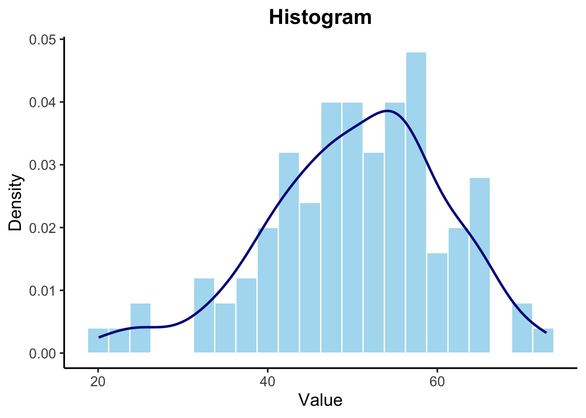
A boxplot provides a summary of the numeric data distribution, highlighting the median, quartiles, and potential outliers.
# Boxplot
ggplot(data.frame(numeric_data), aes(x = "", y = numeric_data)) +
geom_boxplot(fill = "lightgreen", color = "darkgreen", outlier.shape = NA) +
geom_jitter(width = 0.2, alpha = 0.5, color = "darkgreen", aes(x = "")) +
labs(title = "Boxplot",y = "Value") +
theme_classic(base_size = 15) +
theme(plot.title = element_text(hjust = 0.5, face = "bold"))
A density plot shows the distribution of numeric data as a continuous probability density function.
# Density Plot
ggplot(data.frame(numeric_data), aes(x = numeric_data)) +
geom_density(fill = "purple", color = "black", alpha = 0.5, size = 1) +
labs( title = "Density Plot",x = "Value", y = "Density") +
theme_minimal(base_size = 15) + # Increase base font size
theme(
plot.title = element_text(hjust = 0.5, face = "bold", size = 16),
axis.title.x = element_text(size = 14),
axis.title.y = element_text(size = 14),
axis.text = element_text(size = 12),
panel.border = element_rect(color = "black", fill = NA, linewidth = 1)
)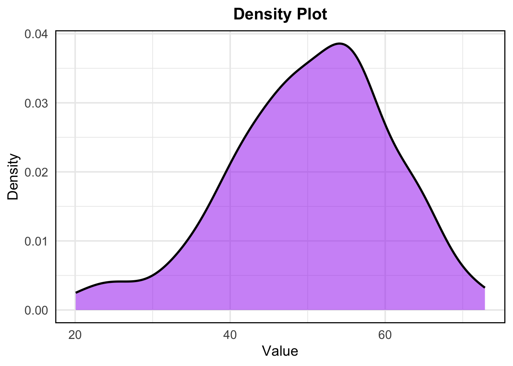
- Visualizing Categorical Data:
For categorical data, common visualizations include bar charts and pie charts.
A bar chart displays the frequency or count of each category in a categorical variable.
# Bar Chart
ggplot(data.frame(categorical_data), aes(x = categorical_data)) +
geom_bar(fill = "coral", color = "black", width = 0.7) +
geom_text(stat = 'count', aes(label = ..count..), vjust = -0.5, color = "black", size = 5) + # Add labels on bars
labs( x = "Category", y = "Count") +
theme_classic(base_size = 15) +
theme(plot.title = element_text(hjust = 0.5, face = "bold"))
A pie chart represents the proportion of each category in the dataset.
# Pie Chart
library(dplyr)
library(ggplot2)
pie_data <- as.data.frame(table(categorical_data)) %>%
rename(Category = categorical_data, Count = Freq) %>%
mutate(Proportion = Count / sum(Count),
label = scales::percent(Proportion))
ggplot(pie_data, aes(x = "", y = Proportion, fill = Category)) +
geom_bar(stat = "identity", width = 1) +
coord_polar(theta = "y") +
labs(title = "Pie Chart") +
theme_void() +
scale_fill_brewer(palette = "Pastel1") +
theme(legend.title = element_blank(),
plot.title = element_text(hjust = 0.5, face = "bold")) +
geom_text(aes(label = label), position = position_stack(vjust = 0.5))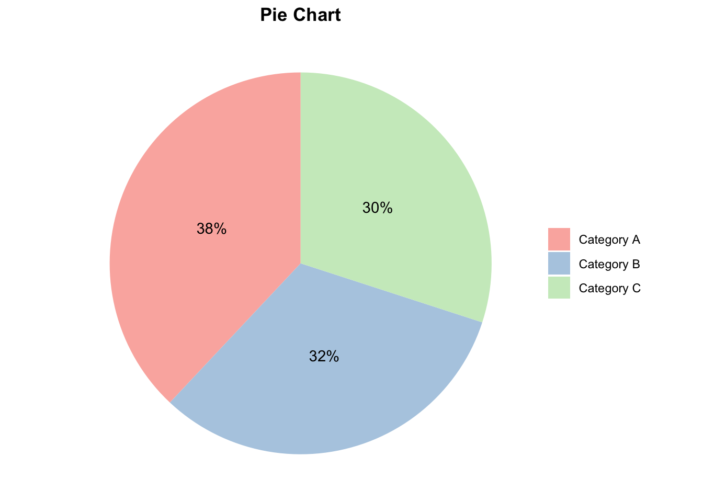
5. Correlation:
Correlation analysis is used to investigate the association between two or more variables.
Step 1: Choose a Correlation Method
Pearson Correlation measures the linear relationship between two continuous variables. It assumes both variables follow a normal distribution.
Spearman and Kendall Correlation are non-parametric and measure the strength and direction of the association between two ranked variables.
Step 2: Preliminary Checks
Before applying Pearson’s correlation, check the assumptions:
- Normality Check –> Use the Shapiro-Wilk test to assess if the variables are normally distributed.
Null hypothesis: the data = normally distributed
Alternative hypothesis: the data = not normally distributed
If the p-value is less than 0.05, the null hypothesis is rejected
# Shapiro-Wilk test for normality
shapiro.test(mtcars$mpg)
Shapiro-Wilk normality test
data: mtcars$mpg
W = 0.94756, p-value = 0.1229shapiro.test(mtcars$wt)
Shapiro-Wilk normality test
data: mtcars$wt
W = 0.94326, p-value = 0.09265Does from data of each of the 2 variables (mpg, wt) follow a normal distribution?:
mpg: The p-value is 0.1229, which is greater than 0.05.
Therefore, we do not reject the null hypothesis. This suggests that the
mpg variable does not significantly deviate from a normal
distribution.
wt: The p-value is 0.09265, which is also greater than
0.05. Thus, we do not reject the null hypothesis. This indicates that
the wt variable does not significantly deviate from a normal
distribution.
- Visualize Normality –> Use Q-Q plots to visually inspect normality.
library(ggpubr)
par(mfrow=c(1,2))
ggqqplot(mtcars$mpg, ylab = "MPG")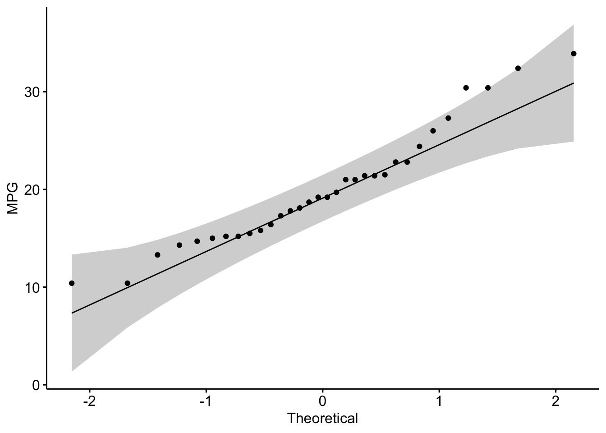
ggqqplot(mtcars$wt, ylab = "Weight")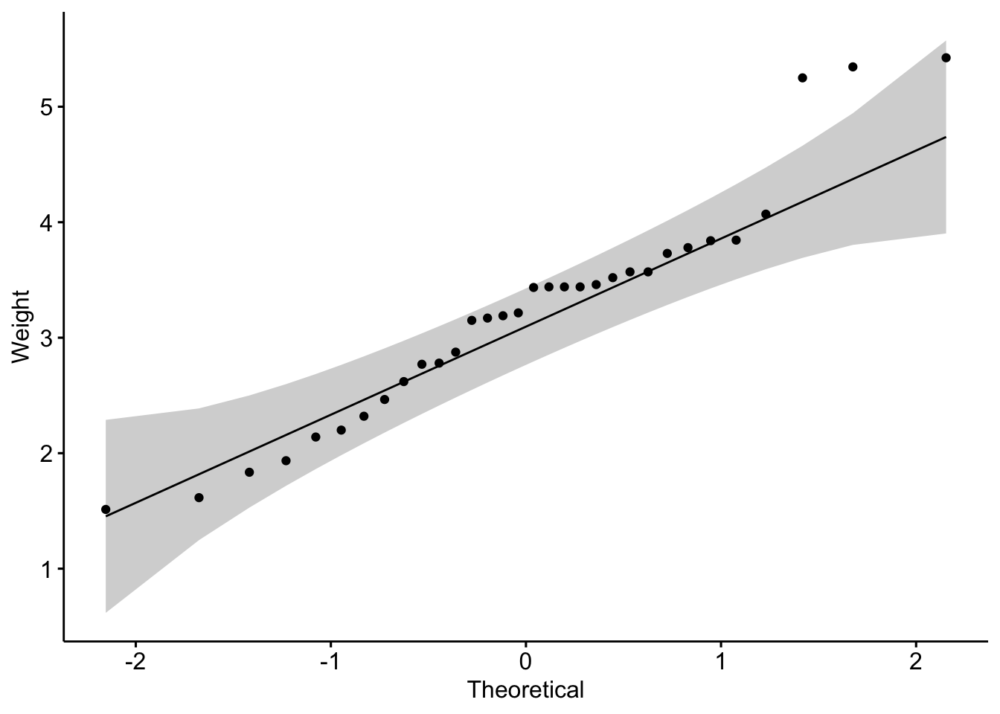
Is the covariation linear?:
Yes, form the plot above, the relationship is linear.
Step 3: Calculate Correlation
- Pearson Correlation
# Pearson correlation test
pearson_res <- cor.test(mtcars$mpg, mtcars$wt, method = "pearson")
pearson_res
Pearson's product-moment correlation
data: mtcars$mpg and mtcars$wt
t = -9.559, df = 30, p-value = 1.294e-10
alternative hypothesis: true correlation is not equal to 0
95 percent confidence interval:
-0.9338264 -0.7440872
sample estimates:
cor
-0.8676594 - Spearman and Kendall Correlation
# Spearman correlation test
spearman_res <- cor.test(mtcars$mpg, mtcars$wt, method = "spearman")Warning in cor.test.default(mtcars$mpg, mtcars$wt, method = "spearman"): Cannot
compute exact p-value with tiesspearman_res
Spearman's rank correlation rho
data: mtcars$mpg and mtcars$wt
S = 10292, p-value = 1.488e-11
alternative hypothesis: true rho is not equal to 0
sample estimates:
rho
-0.886422 # Kendall correlation test
kendall_res <- cor.test(mtcars$mpg, mtcars$wt, method = "kendall")Warning in cor.test.default(mtcars$mpg, mtcars$wt, method = "kendall"): Cannot
compute exact p-value with tieskendall_res
Kendall's rank correlation tau
data: mtcars$mpg and mtcars$wt
z = -5.7981, p-value = 6.706e-09
alternative hypothesis: true tau is not equal to 0
sample estimates:
tau
-0.7278321 Step 4: Visualize the Correlation
# Scatter plot with Pearson correlation
ggscatter(mtcars, x = "mpg", y = "wt",
add = "reg.line", conf.int = TRUE,
cor.coef = TRUE, cor.method = "pearson",
xlab = "Miles per Gallon", ylab = "Weight (1000 lbs)")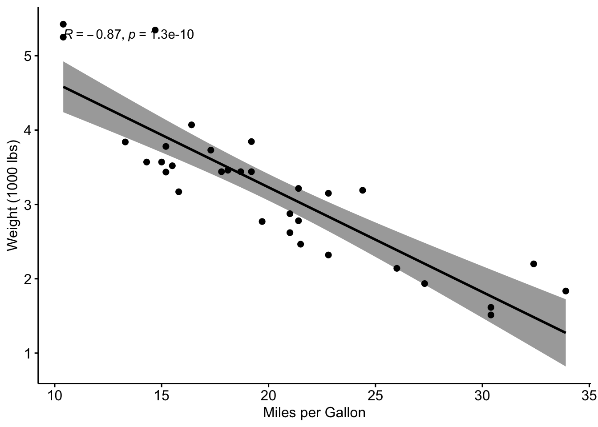
Step 5: Interpretation
Correlation Coefficient:
-1: Strong negative correlation (as one variable increases, the other decreases).0: No correlation.1: Strong positive correlation (both variables increase together).
P-Value:
p-value < 0.05indicates a statistically significant correlation.
Exercise:
Perform a correlation analysis using the mpg and
qsec variables from the mtcars to investigate
the extent of correlation between the two variables. Provide an
interpretation of the correlation coefficient and its p-value.
Example interpretation:
The Pearson correlation coefficient is -0.8677, which points to a strong negative linear relationship between the variables.
The p-value is significantly low (p < 0.001), indicating that the correlation is statistically significant.
The 95% confidence interval suggests that the true correlation lies between -0.9338 and -0.7441.
Compute correlation matrix in R
The R function cor() can be used to compute a correlation matrix.
# We start by loading the mtcars dataset and selecting a subset of columns for our analysis.
data("mtcars")
my_data <- mtcars[, c(1, 3, 4, 5, 6, 7)]
# Display first few rows
head(my_data) mpg disp hp drat wt qsec
Mazda RX4 21.0 160 110 3.90 2.620 16.46
Mazda RX4 Wag 21.0 160 110 3.90 2.875 17.02
Datsun 710 22.8 108 93 3.85 2.320 18.61
Hornet 4 Drive 21.4 258 110 3.08 3.215 19.44
Hornet Sportabout 18.7 360 175 3.15 3.440 17.02
Valiant 18.1 225 105 2.76 3.460 20.22We then compute the correlation matrix:
rescm <- cor(my_data)
# Round the results to 2 decimal places for easier interpretation
round(rescm, 2) mpg disp hp drat wt qsec
mpg 1.00 -0.85 -0.78 0.68 -0.87 0.42
disp -0.85 1.00 0.79 -0.71 0.89 -0.43
hp -0.78 0.79 1.00 -0.45 0.66 -0.71
drat 0.68 -0.71 -0.45 1.00 -0.71 0.09
wt -0.87 0.89 0.66 -0.71 1.00 -0.17
qsec 0.42 -0.43 -0.71 0.09 -0.17 1.00Interpretation: - Values close to 1 or -1 indicate strong positive or negative correlations, respectively.
- Values close to 0 suggest little to no linear relationship.
Visualising the Correlation Matrix:
library(corrplot)
corrplot(rescm,tl.col = "black", addCoef.col = "black")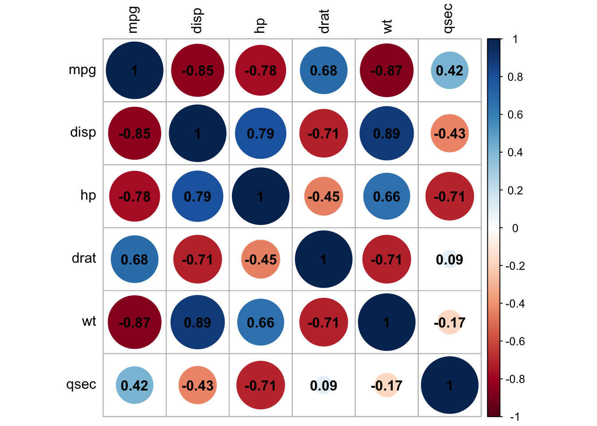
6. Simple Linear Regression:
x <- mtcars$mpg
y <- mtcars$wt
model = lm(y ~ x)
summary(model)
Call:
lm(formula = y ~ x)
Residuals:
Min 1Q Median 3Q Max
-0.6516 -0.3490 -0.1381 0.3190 1.3684
Coefficients:
Estimate Std. Error t value Pr(>|t|)
(Intercept) 6.04726 0.30869 19.590 < 2e-16 ***
x -0.14086 0.01474 -9.559 1.29e-10 ***
---
Signif. codes: 0 '***' 0.001 '**' 0.01 '*' 0.05 '.' 0.1 ' ' 1
Residual standard error: 0.4945 on 30 degrees of freedom
Multiple R-squared: 0.7528, Adjusted R-squared: 0.7446
F-statistic: 91.38 on 1 and 30 DF, p-value: 1.294e-10par(mfrow = c(2, 2))
plot(model)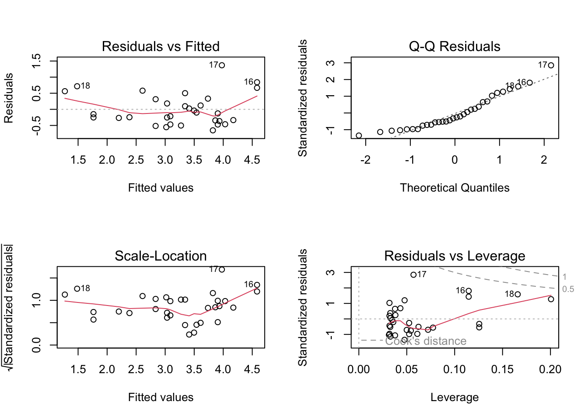
Checking Assumptions:
Assumption 1: Linearity –> Check if the relationship between variables is linear.
Plot of x vs y: This scatter plot displays
the relationship between the predictor x and the response
y.
Abline (Regression Line): The abline(model) adds the
fitted regression line to the plot.
plot(x, y)
abline(model)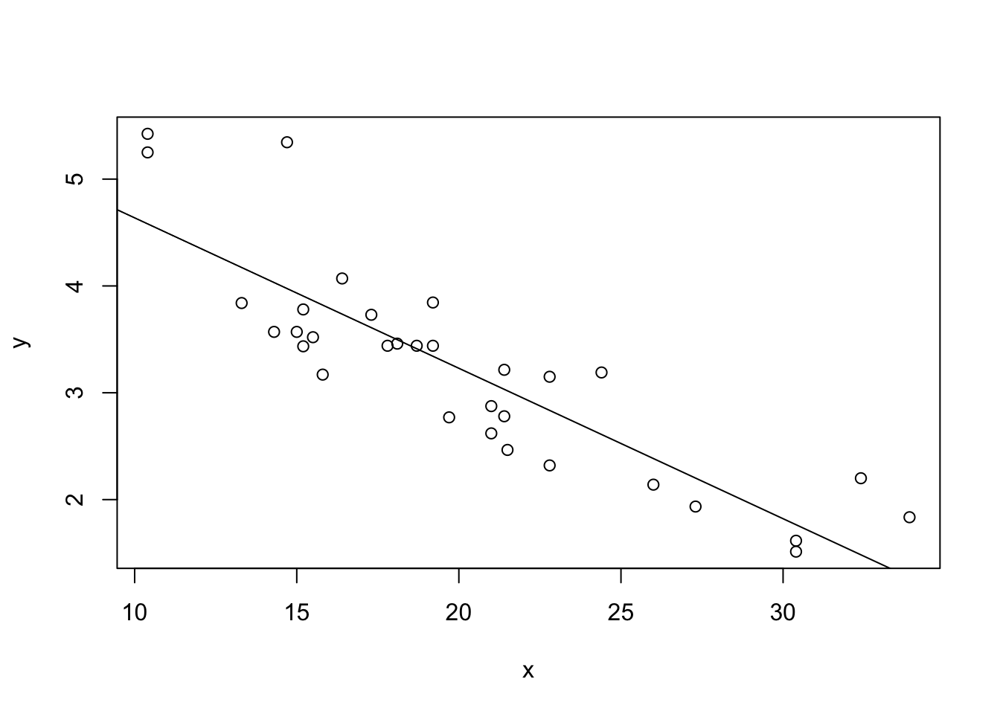
What to Look For:
Linear Relationship: The data points should roughly form a straight line if the linearity assumption is satisfied. The fitted regression line should capture the trend of the data points well.
Non-Linearity: If the data points show a clear curvature or systematic pattern not captured by the straight line, this suggests that the linearity assumption is violated. In such cases, consider polynomial regression or other non-linear models.
Assumption 2: Homoscedasticity –> Ensure that the residuals are evenly distributed.
Plot of Residuals: This plot shows the residuals from the model. Residuals are the differences between the observed values and the values predicted by the model.
plot(model$residuals)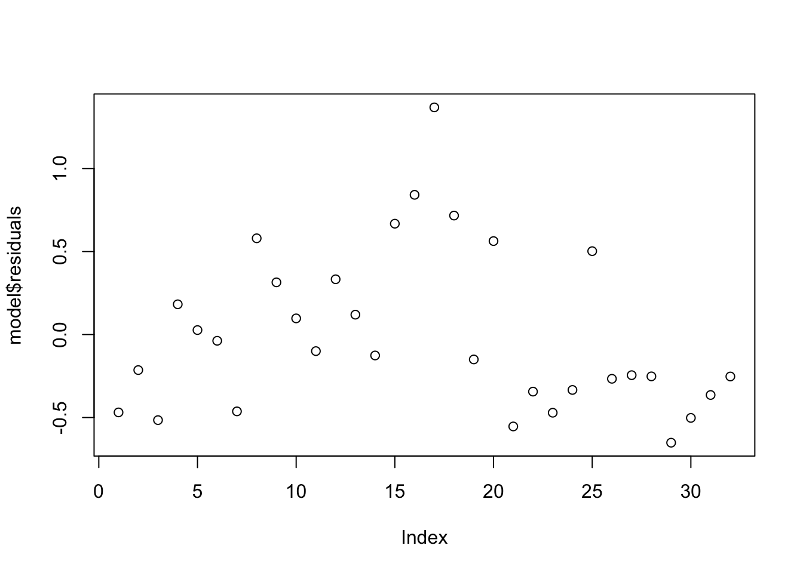
What to Look For:
Even Spread: Ideally, the residuals should be randomly scattered around zero and should not display any clear pattern. This indicates homoscedasticity (constant variance of residuals).
Patterns: If you observe a pattern, such as a funnel
shape (residuals increasing or decreasing as x increases),
it suggests heteroscedasticity (non-constant variance). In such cases,
consider transforming the dependent variable or using robust regression
techniques.
Assumption 3: Normality of Residuals –> Use Q-Q plots to check the normality of residuals.
Q-Q Plot: The Q-Q plot (quantile-quantile plot) compares the quantiles of the residuals with the quantiles of a normal distribution.
qqnorm(model$residuals)
qqline(model$residuals)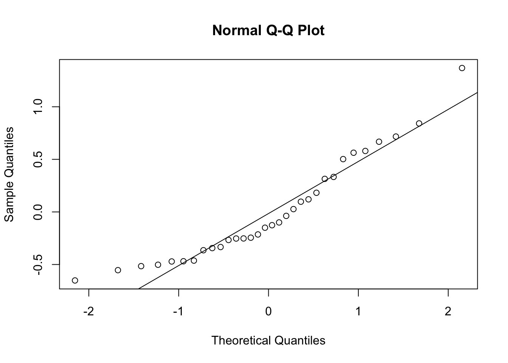
What to Look For:
Straight Line: If the residuals are normally
distributed, the points should closely follow the straight line
(qqline). This suggests that the normality assumption is
reasonable.
Deviations: Significant deviations from the line indicate that the residuals are not normally distributed. This could mean the presence of outliers or skewness in the residuals. If the normality assumption is violated, consider transforming the response variable or using non-parametric methods.
Summary of Interpretation:
Linearity: The plot of x vs. y with the regression line should show a clear linear relationship.
Homoscedasticity: The plot of residuals should display no obvious patterns or systematic structures.
Normality of Residuals: The Q-Q plot should show residuals following the diagonal line if they are normally distributed.
These plots help you validate the assumptions underlying your regression model, ensuring that your results are reliable and interpretable.
Simple Linear Regression Exercise:
You were asked to analyze the following dataset, mtcars, where mpg (miles per gallon) is used as the predictor variable and wt (weight) as the response variable. You have fitted a linear regression model and checked the assumptions.
Now, perform simple linear regression on two variables of your choosing from the mtcars data set and answer the following questions:
Describe the relationship between mpg and wt. Does the plot suggest a linear relationship?
Describe the spread of the residuals. Is there any noticeable pattern that might suggest a violation of the homoscedasticity assumption?
Assess whether the residuals appear to follow a normal distribution based on the Q-Q plot. Are there any significant deviations from the diagonal line?
sessionInfo()R version 4.3.3 (2024-02-29)
Platform: aarch64-apple-darwin20 (64-bit)
Running under: macOS Sonoma 14.5
Matrix products: default
BLAS: /Library/Frameworks/R.framework/Versions/4.3-arm64/Resources/lib/libRblas.0.dylib
LAPACK: /Library/Frameworks/R.framework/Versions/4.3-arm64/Resources/lib/libRlapack.dylib; LAPACK version 3.11.0
locale:
[1] en_US.UTF-8/en_US.UTF-8/en_US.UTF-8/C/en_US.UTF-8/en_US.UTF-8
time zone: Africa/Johannesburg
tzcode source: internal
attached base packages:
[1] stats graphics grDevices utils datasets methods base
other attached packages:
[1] corrplot_0.92 ggpubr_0.6.0 dplyr_1.1.4 ggplot2_3.5.1
[5] workflowr_1.7.1
loaded via a namespace (and not attached):
[1] gtable_0.3.5 xfun_0.46 bslib_0.8.0 processx_3.8.4
[5] rstatix_0.7.2 lattice_0.22-6 callr_3.7.6 vctrs_0.6.5
[9] tools_4.3.3 ps_1.7.7 generics_0.1.3 tibble_3.2.1
[13] fansi_1.0.6 highr_0.11 pkgconfig_2.0.3 Matrix_1.6-5
[17] RColorBrewer_1.1-3 lifecycle_1.0.4 compiler_4.3.3 farver_2.1.2
[21] stringr_1.5.1 git2r_0.33.0 munsell_0.5.1 getPass_0.2-4
[25] carData_3.0-5 httpuv_1.6.15 htmltools_0.5.8.1 sass_0.4.9
[29] yaml_2.3.10 later_1.3.2 pillar_1.9.0 car_3.1-2
[33] crayon_1.5.3 jquerylib_0.1.4 whisker_0.4.1 tidyr_1.3.1
[37] cachem_1.1.0 abind_1.4-5 nlme_3.1-165 tidyselect_1.2.1
[41] digest_0.6.36 stringi_1.8.4 purrr_1.0.2 labeling_0.4.3
[45] splines_4.3.3 rprojroot_2.0.4 fastmap_1.2.0 grid_4.3.3
[49] colorspace_2.1-1 cli_3.6.3 magrittr_2.0.3 utf8_1.2.4
[53] broom_1.0.6 withr_3.0.1 scales_1.3.0 promises_1.3.0
[57] backports_1.5.0 rmarkdown_2.27 httr_1.4.7 ggsignif_0.6.4
[61] evaluate_0.24.0 knitr_1.48 mgcv_1.9-1 rlang_1.1.4
[65] Rcpp_1.0.13 glue_1.7.0 rstudioapi_0.16.0 jsonlite_1.8.8
[69] R6_2.5.1 fs_1.6.4